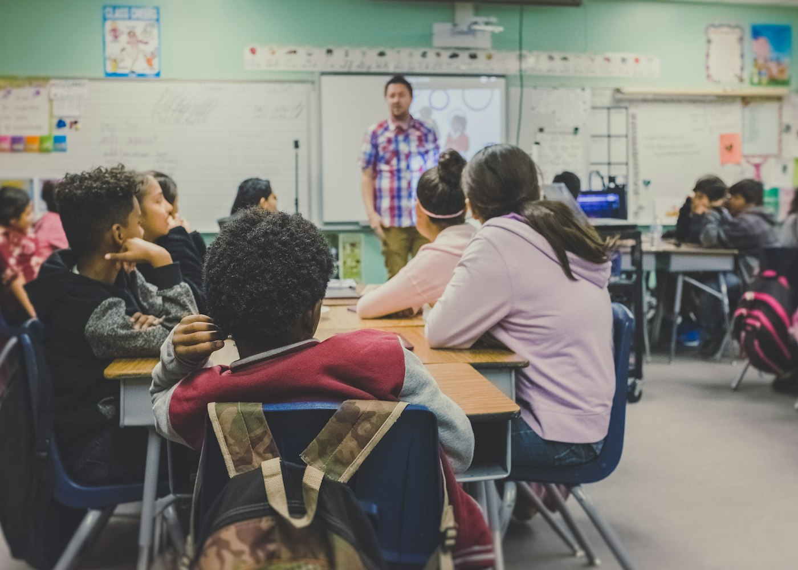
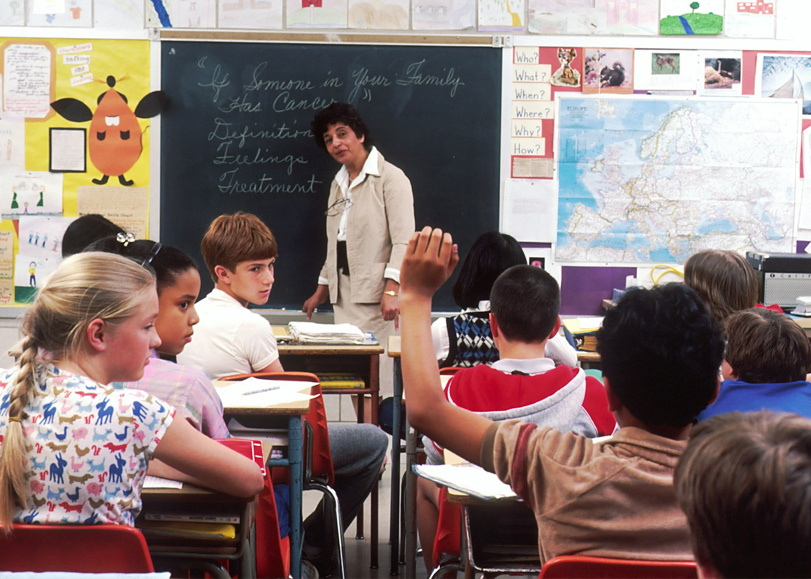

Educação Infantil
Primeiras descobertas com afeto, respeito e desenvolvimento socioemocional.
EDUCAÇÃO HUMANA E GRATUITA • DESDE 2002
Ensino 100% gratuito, formação em valores humanos e acolhimento integral para crianças e famílias da comunidade.
Nossa essência
A Escola Caminho dos Valores une excelência pedagógica à vivência dos cinco valores fundamentais: Amor, Paz, Verdade, Retidão e Não-violência. Há mais de duas décadas, oferecemos educação infantil e fundamental 100% gratuita, cursos com a comunidade e ações socioambientais que multiplicam oportunidades.
O que fazemos
Conheça as opções e escolha o que faz sentido para você.
Primeiras descobertas com afeto, respeito e desenvolvimento socioemocional.
Alfabetização sólida, curiosidade pelo mundo e convivência pacífica.
Pensamento crítico, ética, cidadania e preparação integral até o 9º ano.
Vivência diária de Amor, Paz, Verdade, Retidão e Não-violência no ambiente escolar.
Projetos socioambientais, horta pedagógica e cursos de formação humana para famílias.
Espaço aberto para quem deseja somar talentos, tempo ou contribuições para as crianças.
Por dentro
Imagens ilustrativas do universo deste projeto.


Como funciona
Visite nosso espaço e converse com educadores e coordenação.
Participe como doador, voluntário ou instituição parceira.
Acompanhe a evolução das turmas e a transformação comunitária.
Em destaque
Amor, Paz, Verdade, Retidão e Não-violência vivenciados na prática diária.
Cursos, oficinas e acolhimento contínuo para a comunidade.
Auditoria independente, prestação de contas e responsabilidade social permanente.
Quem viveu, recomenda
“Ver as crianças aprendendo com alegria, respeito mútuo e carinho prova que a educação com amor é o caminho mais bonito para um futuro melhor.”
Depoimento ilustrativo de mãe da comunidade
Antes de começar
Não. O ensino, alimentação escolar e materiais didáticos são 100% gratuitos.
Por meio de doações de pessoas físicas, parcerias institucionais, eventos beneficentes e voluntariado.
Atendemos da Educação Infantil até o 9º ano do Ensino Fundamental.
Sim! Recebemos visitantes, pesquisadores e parceiros mediante agendamento prévio.
Vamos conversar
Deixe seus dados para simular o contato ou fale agora com nossa equipe.
Conversar no WhatsApp ↗